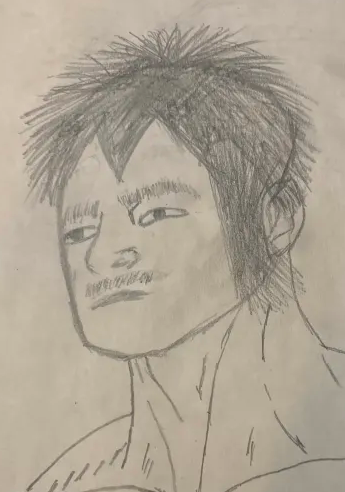

Rowdy
Character Physical Description
Rowdy is strong, brave, intimidating, and many more adjectives. One example proving this is when Arnold says, “Rowdy is the toughest kid on the rez. He is long and lean and strong like a snake.” (Alexie 15). I do not think that his appearance really changes throughout the novel, but he does become a bit emotional, like when Arnold’s sister passed away: “That made Rowdy sort of choke. He gasped a little. And more tears rolled down his face.” (Alexie 210)
A represention of Rowdy through a drawing
Important Relationship: Arnold
Arnold: Rowdy and Junior have been best friends since birth: “Both of us were pushed into the world on November 5, 1992, at Sacred Heart Hospital in Spokane.” (Alexie 17). However, Arnold decided that he wanted to transfer schools to get a better education, and this made Rowdy feel betrayed. But later, he forgave Arnold, and their relationship healed. I will represent their relationship with a tree, where Rowdy and Arnold are both branches of the tree, because they always lead back to the same roots, similar to how they shared everything from the beginning.

Important Relationship: Father
Rowdy's Father: Rowdy’s father is abusive towards him and his mother due to alcohol: “His father is drinking hard and throwing punches, so Rowdy and his mother are always walking around with bruised and bloody faces.” (Alexie 16), which may be the reason why Rowdy is “the toughest kid on the rez” (Alexie 15). Although this may seem bad, sometimes their relationship is good. For example, when Arnold brought him his cartoon of them together, his father answered the door, and he seemed pretty calm. He simply took the drawing and brought it to Rowdy without any fuss.